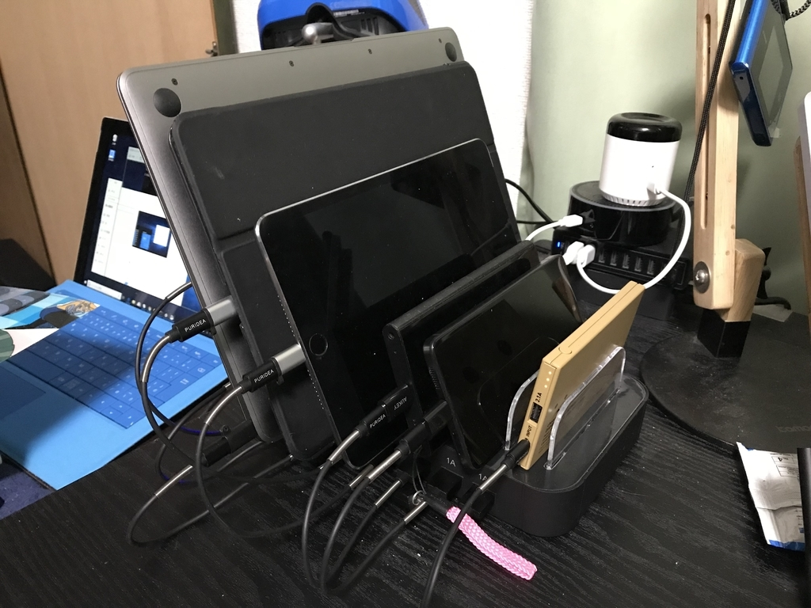

11月2日：充電ステーションの導入でちょっとだけデスクが片付いた
公開日：

先月末から今月にかけて収納・整頓を少しずつ進めているけれど、これもその一環。増え続けるモバイルガジェットに対応して、8ポートの充電ステーションを導入した。今までは 4 ポート充電器＋竹製のスタンドだったのだけど、それだけでは全然足りなくなり、いざ使おうと思うとバッテリーが放電してたり、固定した収納位置がないがためにあちこちにほったらかしになったりと、弊害が無視できなくなっていた。
モノは Amazon で売れ筋っぽい「Evfun USB充電ステーション」をチョイス。
")
Evfun USB充電ステーション 8ポート 充電スタンド 収納充電 8台同時充電 1A /2.1A/2.4A iPhone iPod iPad Androidスマホ/タブレット対応 (ブラック)
- 出版社/メーカー: Evfun
- メディア: ホーム&キッチン
- この商品を含むブログを見る
充電器＋スタンドがセパレートになっているものの方が柔軟性は高いだろうけど、ウチの場合、USB 充電器はもともと 4 ポートのものしかない。どうせ新しく買わなきゃいけないのだったら、別に一体型でもいいかなと思った。一体型は自由が利かない代わりにリーズナブルで、配線の手間が減る。
充電ケーブルははじめ、家に転がっていたものをかき集めて適当に使っていたのだけど、長さがまちまちなのが見た目に煩わしく、また使いにくくもあったので、短いものを5本セット×2を別途調達（買ったときは 20cm × 5本があったけど、今はないみたい？）。手持ちのケーブルでいろいろ試した結果、長さは 20cm 程度が使い勝手よさそう。

このケーブルは接続部分がバネのような材質で補強されていて安心そうでよい。接続不良などが心配だったので（何回か初期不良品をつかまされたことがある）、2回に分けて買ったが、通電に問題があるケーブルは一本もなく杞憂に終わった。品質もそれなりに良いようだ。ちなみに、ケーブルは Micro USB で統一し、それを変換コネクターで Lightning や USB-C に変えてある。手元にいくつか変換コネクターがすでにあったこと、コネクターは Micro USB/Lightning → USB-C への過渡期で、滅びていきそうな Lightning を買いましたり、まだ玉石混交そうな USB-C ケーブルを大量に新規購入したくなかったというのが理由だけど、単にケーブルをなるべく統一したかったのというのも割と大きな動機だったりする。
ちょっと気を付けなきゃいけないのは、この充電器、ポートによって電流量が違う。左から順に
1A、1A、2.4A、2.4A、2.4A、2.4A、1A、1A
みたいな感じ。ちゃんと書いてあるから間違えないし、どれ挿してもとりあえずは充電されるだろうから（よく知らんけど）、あまり気にはならないけど、気にする人はするんじゃないかなって思った。自分はクイックチャージなんかにもあまり興味のないタイプだから満足だけど。
P.S：
8ポートでも足りないかもしれない（深刻